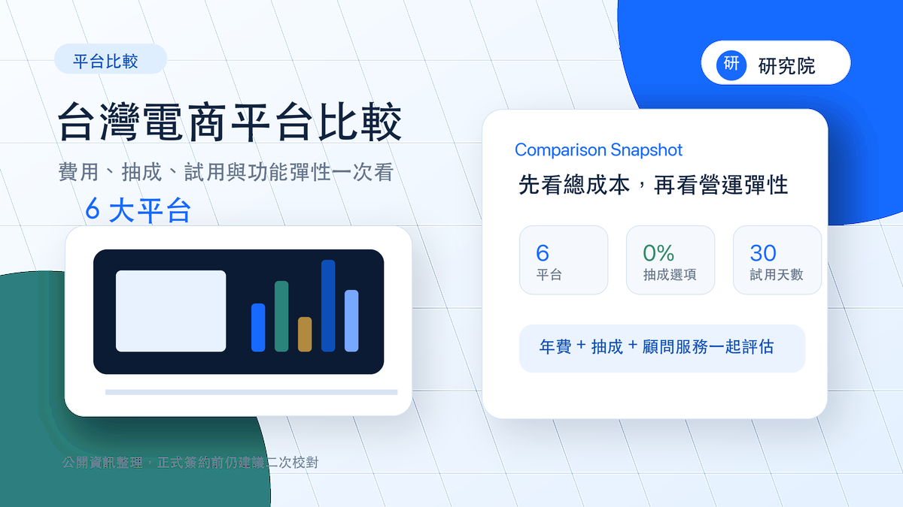
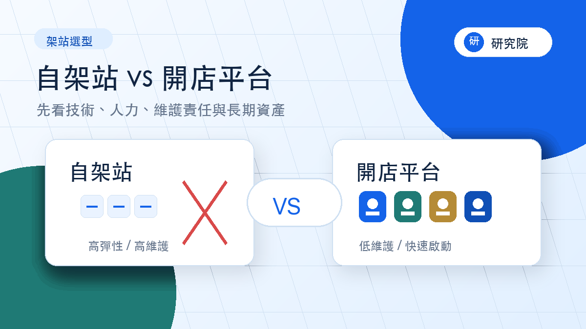
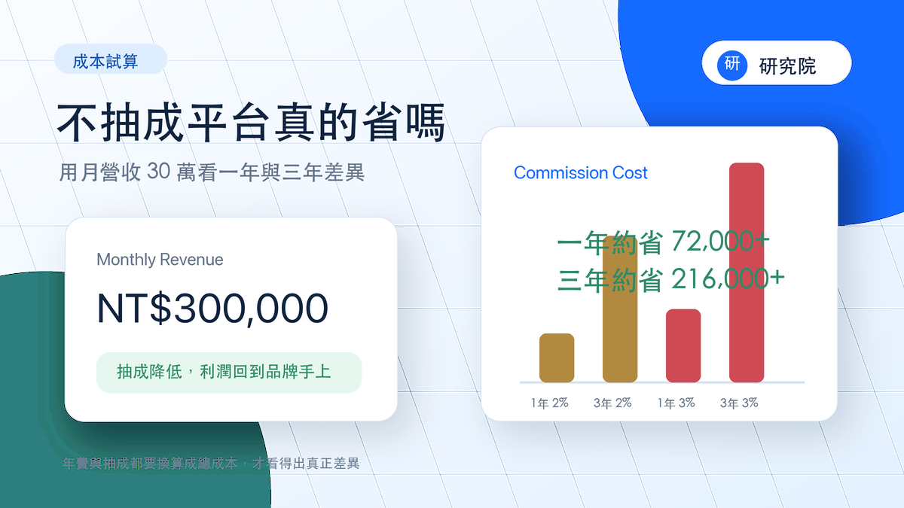
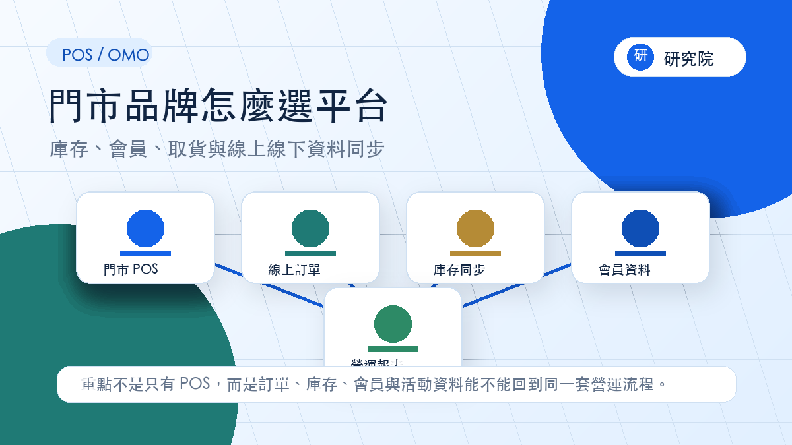
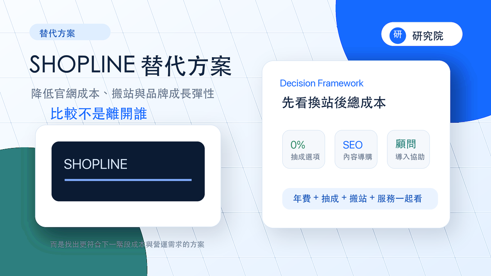

總成本
年費只是第一層，還要一起看抽成、開辦費、加購模組、搬站成本與未來三年的營收成長。
快速答案
新手低預算可以先看 WACA 或 ShopStore；已有門市、POS 與庫存整合需求可評估 CYBERBIZ、SHOPLINE 或 BVSHOP；如果你的重點是品牌官網、內容導購、SEO 長期流量、不想被抽成吃掉利潤，或希望有人協助規劃營運，建議優先比較 0% 抽成、功能開放度高且有真人支援的平台。
比較方法
參考多篇開店平台比較文的常見架構後，這個網站把評估重點整理成四個面向：總成本、成長功能、服務支援、資料與內容資產。
年費只是第一層，還要一起看抽成、開辦費、加購模組、搬站成本與未來三年的營收成長。
會員、優惠、直播社群、內容頁、SEO、POS、倉儲與分潤功能，最好確認是不是常用功能都能開好用滿。
AI 客服可以解決基本操作，但搬站、活動規劃、商品分類、會員分眾和轉換率優化，更需要真人顧問協助判斷。
品牌官網、內容 SEO、會員資料與回購流程，會決定你能不能逐步降低對廣告和大型通路的依賴。
比較內容採「公開可查資料 + 使用情境」整理，不以單一最低月費作為排名依據，也不把任何平台視為所有商家的唯一答案。
平台方案、抽成、試用天數與加購功能可能調整；正式決策前，仍建議向平台官方或業務取得最新報價。
快速推薦
費用與功能對照表
以下整理各平台公開資訊、方案頁、第三方比較文章與實務選型資料。方案費用以網路開店常見或中高階方案作為參考，不使用全通路最高階方案作為唯一比較基準。
1%–3% 看起來不多，但月營收 30 萬以上時，一年成本會很有感。0% 抽成或低抽成平台值得放進第一輪比較。
部落格、會員分級、直播社群、POS、蝦皮串接與 API 常常會依方案開放。比較時要確認常用功能是否完整開放，避免後續一直加錢。
如果你需要有人協助搬站、規劃活動、設定會員和追蹤數據，真人顧問比單純客服更有價值。比較平台時，建議把導入協助和營運支援一起列入總成本。
| 平台 | 年費 / 選用方案 | 是否抽成 | 試用天數 | 蝦皮串接 | POS / OMO | 會員 / 優惠 | 行銷與內容 | 適合 |
|---|
資料與免責說明：本表依各平台公開方案頁、官方文章、第三方比較文章與實務選型資料整理，僅供初步比較參考，並非各平台官方報價或合作聲明。平台費用、抽成、試用天數、功能開放、加購項目與合約條件可能隨時調整，正式決策前請以各平台官方公告、業務報價與合約內容為準。
這張表適合用來縮小候選名單，不適合直接當作簽約依據。建議先選 2–3 家平台，再拿你的商品數、月營收、門市需求、會員規劃和內容 SEO 目標，請平台提供正式方案與合約條件。
換站利潤試算
輸入目前月營收、現有平台抽成與年費，試算換到 0% 抽成平台後，每月、每年、三年大約能省下多少。
如果你的月營收已經接近 20 萬、30 萬，或平台抽成開始高過你能接受的行銷成本，就應該把 0% 抽成平台拿來試算。同時也要把搬站協助、顧問服務和功能加購放進「換站後總成本」一起比較。
試算未包含金流、物流、客製、搬站與行銷成本；正式決策前仍需依各平台最新方案與實際營運條件估算。
情境選型
高排名比較文通常會把平台分成新手、品牌成長、門市整合與社群銷售幾種情境。你可以先用這張表縮小名單，再回到上方看細項。
先看試用期、上架速度、基礎金物流與年費門檻。
可先比較：ShopStore、WACA抽成會直接吃掉利潤，建議先用三年成本試算。
可先比較：BVSHOP、WACA、MEEPSHOP 金神燈看內容頁、部落格、活動頁、會員資料與顧問協作。
可先比較：BVSHOP、SHOPLINE、ShopStore看線上線下資料能不能同步，以及導入服務是否完整。
可先比較：CYBERBIZ、SHOPLINE、BVSHOP延伸閱讀
從平台比較、自架站選擇、抽成成本、平台費用到替代方案，整理品牌主最常遇到的開店決策問題。

主攻「電商平台比較」「開店平台推薦」等高意圖關鍵字，整理平台費用與功能差異。

比較技術維護、費用、SEO、資料主權、金物流串接，適合承接正在猶豫架站方式的人。

把抽成、年費、金流與長期利潤拆開，導向換站利潤試算工具。

鎖定 OMO、門市 POS、庫存同步與會員資料整合需求，吸引成長型商家。

整理 SHOPLINE 換站與替代方案的比較角度，從年費、抽成、商品搬家、SEO 與顧問服務判斷。
承接「SHOPLINE 費用」搜尋意圖，拆解年費、抽成、功能限制與替代方案判斷。
鎖定 WACA 替代方案與低門檻開店搜尋，整理新手與成長型品牌的不同選法。
承接「開店平台費用」搜尋，讓讀者先理解總成本，再導向比較表與換站試算。
FAQ
先看營收階段與商業模式，再看年費、抽成、試用、會員功能、內容 SEO、POS/OMO、直播社群和顧問支援。不要只用月費決定。
適合已有穩定營收、毛利需要控管，或未來想把廣告、內容和會員回購做大的品牌。營收越高，0% 抽成越容易拉開總成本差距。
如果團隊沒有專職電商人員，搬站、商品分類、活動規劃、會員分眾、追蹤碼和 SEO 設定都可能拖慢上線。這時候，有真人顧問協助的平台，通常比單純提供客服工單的平台更適合成長型品牌。
很多平台會把會員分級、部落格、直播社群、POS、API 或通路串接放在高階方案。比較時要確認你真的會用到的功能是否已包含，避免上線後才發現需要加購。